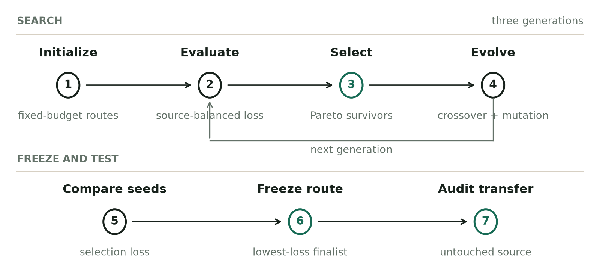
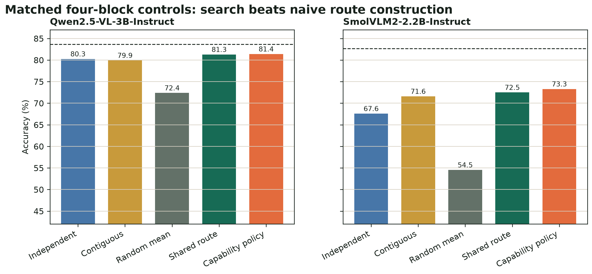
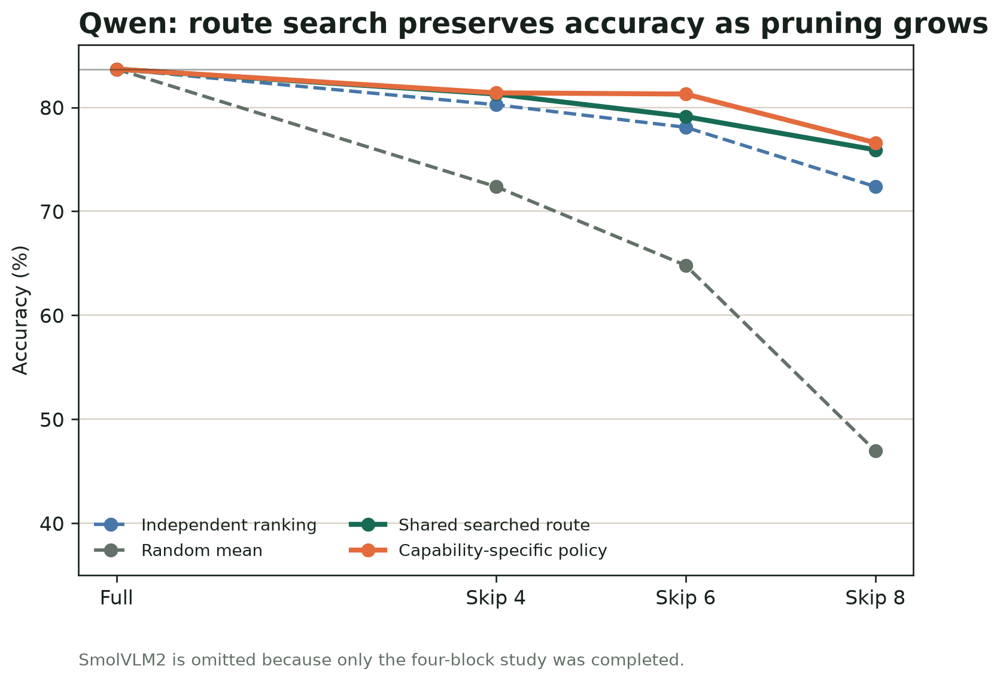
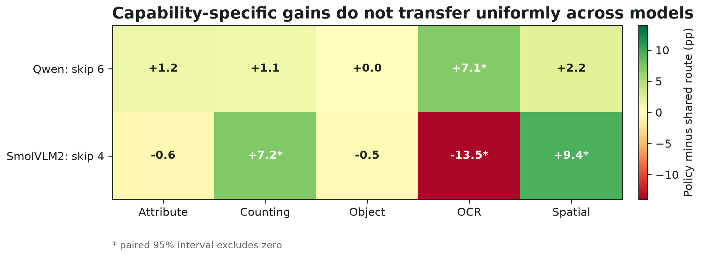
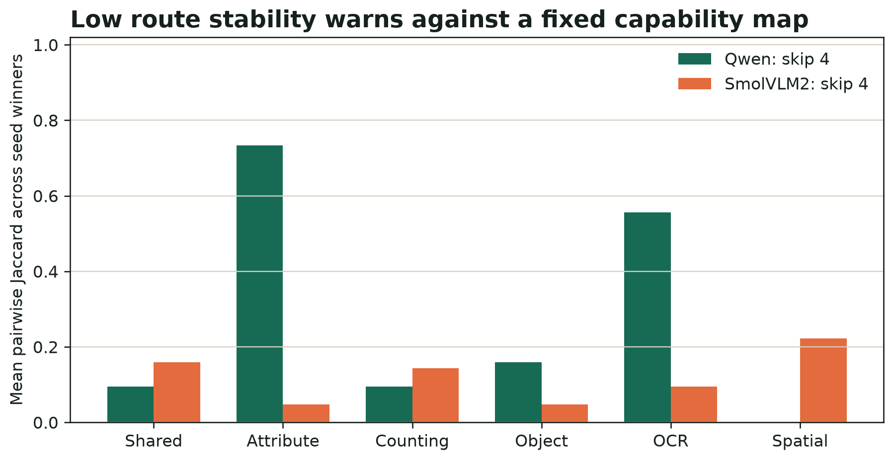
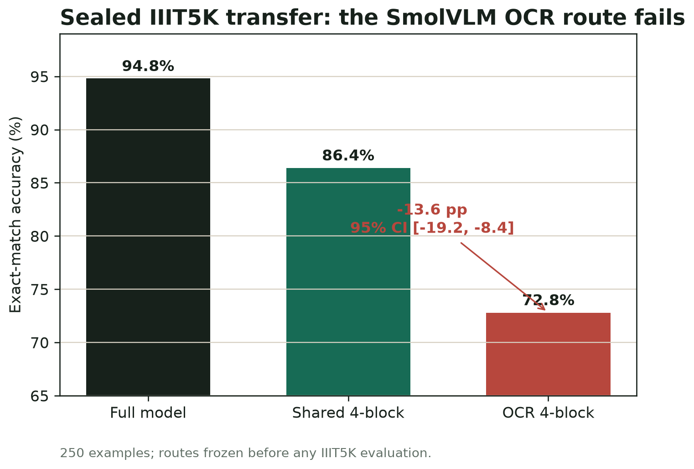
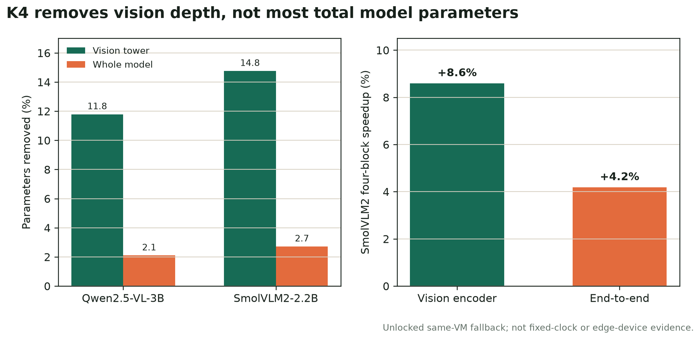

Empirical study
Searching for Task-Specific Vision Paths
Can a vision-language model skip different encoder blocks for different visual capabilities without losing accuracy?
Abstract
Vision-language models execute the same vision stack for OCR, counting, object recognition, attributes, and spatial questions. We ask whether selected vision-transformer blocks can be replaced with identity operations at inference time, and whether the best skipped blocks depend on the requested capability. We evaluate Qwen2.5-VL-3B and SmolVLM2-2.2B on five capability buckets using matched skip budgets and source-aware evolutionary search. Search consistently finds stronger block combinations than independent layer ranking, contiguous removal, or random routes. When six Qwen blocks are skipped, choosing a separate route for each capability improves overall accuracy by 2.17 points over one shared six-block route, driven by a 7.10 point OCR gain. When four SmolVLM2 blocks are skipped, the capability policy is only +0.80 points overall because counting and spatial gains are offset by a 13.55 point OCR loss. On sealed IIIT5K, the Smol OCR-specific four-block route loses 13.6 points against its shared four-block route. Route construction is a combinatorial problem, aggregate accuracy can hide large capability changes, and capability labels alone do not define universal vision pathways.
1. Research question
At the same number of skipped vision blocks, can combinatorial search preserve more accuracy than naive pruning, and can capability-specific routes beat one shared route?
A VLM first converts an image into visual tokens, transforms those tokens through a stack of vision blocks, projects them into the language model space, and then generates an answer with its decoder. Every query normally executes every vision block, even when the requested visual information differs substantially.
Our intervention changes only the vision-block stage. A route is a set of block indices to skip. K4, K6, and K8 mean that exactly four, six, or eight blocks are replaced with identity. The hidden state passes through unchanged at those positions, while every other vision block and the complete language decoder remain intact.
- 2
- model architectures
- 5
- visual capabilities
- 1,780
- discovery examples
- 876
- selection examples
- 4, 6, 8
- completed Qwen skip counts
- 4
- completed SmolVLM2 skip count
How to read the route names
- Full model
- Skip zero blocks and execute the complete vision encoder.
- One shared K-block route
- Search selects one set of exactly K blocks. The same set is skipped for every OCR, counting, spatial, object, and attribute question.
- Capability-specific K-block policy
- Search selects five routes, each skipping exactly K blocks. The route matching the known capability label is used for each question.
- Best found route
- The strongest candidate evaluated by the frozen evolutionary procedure, not a proof of the global optimum across every possible combination.
Interpretation boundary: these routes show which computations can be bypassed with limited behavioral damage. They do not show that OCR, counting, or another capability is stored inside a named block.
What we are testing
- Construction: does evolutionary search find a better same-K block combination than independent layer scores, contiguous removal, or random routes?
- Specialization: does selecting a different same-size route for OCR, counting, spatial, object, or attribute questions outperform one shared searched route?
- Transfer: does a route selected for a capability continue to help on a fresh dataset from that capability?
- Efficiency: how much vision computation and whole-model latency does block skipping actually save?
2. Models and data
Models
Qwen2.5-VL is the primary study model. SmolVLM2 provides a separate architecture and scale check. Together they test whether a route-search result survives a change in vision depth and model family rather than appearing only in one network.
| Model | Vision blocks | Completed budgets | Role |
|---|---|---|---|
| Qwen2.5-VL-3B-Instruct | 32 | 4, 6, and 8 blocks | Primary budget study |
| SmolVLM2-2.2B-Instruct | 27 | 4 blocks | Cross-model replication |
Important: the SmolVLM2 diagnostic that skipped six blocks was stopped after its shared route lost 21.80 points. It has no completed matched controls or transfer result, so it is excluded from the final comparisons.
Capability benchmark
The discovery corpus contains 1,780 image-question pairs over 1,431 unique images. It combines controlled MME questions with natural examples from OCRBench, TallyQA, VSR, POPE, and VQAv2 Color. Answers are short and deterministically scorable.
| Capability | Representative sources | What the question tests | Selection rows |
|---|---|---|---|
| Attribute | MME color, VQAv2 Color | Color or visual property | 166 |
| Counting | MME count, TallyQA | Number of visible objects | 181 |
| Object | MME existence, POPE | Whether an object is present | 193 |
| OCR | MME OCR, OCRBench | Text visible in the image | 155 |
| Spatial | MME position, VSR | Relative position or relation | 181 |
| Method-selection total | 876 | ||
Data separation
- Search partition
- 904 rows used for route optimization and development diagnostics. Source-balanced scouts reduce early search cost.
- Selection partition
- 876 image-disjoint rows used to choose among frozen finalists and compare matched controls. It is method-selection evidence, not a new sealed public benchmark.
- Fresh transfer
- 250 IIIT5K word images excluded from all route selection. They were opened only after SmolVLM2 routes were frozen.
3. Intervention and process
Identity block skipping
For a skipped block, its output is replaced by its input. No weights are deleted during evaluation, and no fine-tuning, distillation, prompt tuning, or repair is performed. This isolates the effect of executing fewer dense vision blocks.
For skipped block l: h[l + 1] = h[l]All comparisons within a result row skip the same number of blocks. A capability-specific six-block route is compared with a shared six-block route and six-block controls. The full model is an accuracy reference, not a matched-compute route.
Baselines
| Route family | How blocks are chosen | Purpose |
|---|---|---|
| Independent ranking | Combine blocks with the smallest individual accuracy damage | Tests whether single-block scores compose |
| Contiguous | Remove the least-damaging adjacent run of K blocks | Simple structured baseline |
| Random | Three deterministic random K-block routes | Measures uninformed route quality |
| Shared searched route | Optimize one K-block route across all capabilities and sources | Best found single route |
| Capability-specific policy | Optimize one K-block route per capability with collateral-loss control | Tests capability specialization |
Evolutionary search
This is a fixed-cardinality, multi-objective genetic search. A chromosome is not a neural network weight vector. It is simply a set S containing exactly K block indices to skip. Equivalently, it is an L-bit mask with exactly K active skip decisions. Search never changes K within a run.
What the loss measures
Every route is paired with the full model on identical examples. For capability c and dataset source d, the cell drop is:
Delta[c,d](S) = 100 * (full accuracy[c,d] - route accuracy[c,d])Lower is better. Negative values mean the skipped route improved accuracy in that cell. Cells are averaged equally, so a large dataset source cannot dominate a small one merely by containing more rows.
For one shared route, let mu be mean drop over all cells, w the worst cell drop, and sigma the population standard deviation across cells:
L_shared(S) = 0.50 * mu + 0.30 * w + 0.20 * sigma
Pareto vector = (mu, w, sigma)For a route targeting capability t, compute mu_t, w_t, and sigma_t only across that capability's sources. kappa_t is mean collateral drop across every non-target capability-source cell:
L_t(S) = 0.45 * mu_t + 0.30 * w_t + 0.15 * kappa_t + 0.10 * sigma_t
Pareto vector = (mu_t, w_t, kappa_t, sigma_t)The collateral term discourages an OCR route, for example, from preserving OCR by destroying counting, object, attribute, and spatial performance. It is a penalty, not a hard guarantee.
How one generation works
- Initialize: seed up to half the population with routes from single-block sensitivity and earlier searches, then add deterministic random K-block subsets.
- Evaluate: run every route on a source-balanced scout and compute its multi-objective vector.
- Select: keep half by nondominated Pareto front. If a front only partly fits, prefer NSGA-II crowding distance, then lower scalar loss, then lexicographic block order.
- Crossover: retain blocks shared by both parents, then choose from their remaining union until the child again has exactly K blocks.
- Mutate: swap exactly one included block for one excluded block. Survivors remain unchanged and duplicate children are rejected.
- Repeat: evaluate the new fixed-size population. Every operation is reproducible from the frozen seed.
Concrete K4 example: parents {2, 5, 8, 11} and {2, 6, 8, 14} force the child to keep shared blocks {2, 8}. Crossover chooses two more from {5, 6, 11, 14}. Mutation then removes one child block and inserts one allowed block not already present. The child still skips exactly four blocks. There is no mutation or crossover probability: every offspring receives both operations once, while selected survivors pass through unchanged.
Qwen used 16 routes, 3 evaluated generations including the initial population, and 3 seeds. The lean SmolVLM2 replication used 12 routes, 2 evaluated generations, and the same 3 seeds. Each seed supplied at most two scout finalists. After deduplication, finalists were reranked on 300 development rows, at most three advanced to all 876 selection rows, and the lowest matching scalar loss was frozen.
What it is not: this is not a learned per-question router, gradient training, or proof of the globally best subset. The capability policy uses a known capability label to choose among five frozen routes.

End-to-end process
- Establish the full-model reference.
Run every example with all vision blocks active and cache deterministic greedy predictions.
- Measure individual block sensitivity.
Skip one block at a time to build the initial task-by-block map. This is diagnostic evidence, not the final route rule.
- Build equal-skip controls.
Construct independent, contiguous, and random routes that skip the same four, six, or eight blocks as the searched route.
- Search combinations.
Optimize one shared route and five capability-specific routes with three evolutionary seeds and source-balanced objectives.
- Evaluate and freeze finalists.
Use a 300-row development evaluation, then the complete 876-row selection partition. Freeze routes before any fresh transfer result is viewed.
- Compare paired predictions.
Report exact accuracy differences and paired bootstrap 95% intervals on identical examples.
- Audit transfer and speed.
Open sealed IIIT5K for Smol OCR transfer and measure batch-size-one latency on the same RTX 4090 VM.
Earlier diagnostics: the repository also retains progressive independent routes, activation rescue, low-rank feature-gap repair, interaction-aware beam search, and earlier latency audits. Those experiments motivated source-balanced combinatorial search, but they are supporting evidence rather than separate headline claims.
4. Results
The strongest general result is about how routes are constructed. Evolutionary search beats naive combinations on both architectures. The result for whether a capability should use a different route is mixed and often uncertain.
The searched SmolVLM2 shared four-block route compared with selecting four blocks from independent one-block rankings, paired 95% interval [1.83, 7.99].
The searched SmolVLM2 capability-specific four-block policy compared with independently constructed task routes, paired 95% interval [5.82, 11.99].
The Qwen capability-specific six-block policy compared with one shared six-block route, paired 95% interval [0.00, 4.34].
The SmolVLM2 OCR-specific four-block route compared with one shared four-block route on sealed IIIT5K, paired 95% interval [-19.2, -8.4].
| Model | Blocks skipped | Full model | One shared route | Capability-specific policy | Policy minus shared | Paired 95% interval |
|---|---|---|---|---|---|---|
| Qwen2.5-VL-3B | 4 of 32 | 83.68 | 81.28 | 81.39 | +0.11 | [-1.83, 2.05] |
| Qwen2.5-VL-3B | 6 of 32 | 83.68 | 79.11 | 81.28 | +2.17 | [0.00, 4.34] |
| Qwen2.5-VL-3B | 8 of 32 | 83.68 | 75.91 | 76.60 | +0.68 | [-1.71, 3.08] |
| SmolVLM2-2.2B | 4 of 27 | 82.65 | 72.49 | 73.29 | +0.80 | [-1.94, 3.54] |
How to interpret each model
- Qwen, four skipped
- The shared route reaches 81.28%, only 2.40 points below the full model. Capability-specific routes add only 0.11 points overall.
- Qwen, six skipped
- The capability policy reaches 81.28%, 2.17 points above the shared six-block route. It matches the shared four-block route while skipping two additional blocks.
- Qwen, eight skipped
- The capability policy adds only 0.68 points and its interval crosses zero. Eight skipped blocks remain substantially below the full model.
- SmolVLM2, four skipped
- The shared route is 10.16 points below the full model, showing greater fragility. Search still beats independent construction by 4.91 points.
Aggregate accuracy hides capability changes
Similar overall accuracy does not mean the shared and capability-specific policies behave similarly. Positive and negative capability effects can cancel when averaged.
- Qwen, six skipped
- The policy is +2.17 points overall, but OCR alone improves by +7.10 points [0.65, 14.19]. The overall average understates the strongest capability gain.
- SmolVLM2, four skipped
- The policy is only +0.80 points overall, but counting improves by +7.18, spatial by +9.39, and OCR falls by -13.55 points. Large effects cancel in the aggregate.

Budget matters
On Qwen, removing more blocks predictably lowers absolute accuracy. Search becomes more useful at aggressive budgets because random and contiguous routes degrade quickly. Six skipped blocks is the most informative capability-routing setting: the capability-specific policy recovers 2.17 points over one shared six-block route, driven most clearly by OCR at +7.10 points [0.65, 14.19].

Capability gains do not form one stable map
Qwen OCR improves when six blocks are skipped, but SmolVLM2 OCR deteriorates when four are skipped. SmolVLM2 counting and spatial improve while attribute and object remain uncertain. A block route can therefore be useful for one architecture and harmful for another, even under the same capability name.


5. Transfer and efficiency
Fresh OCR transfer
IIIT5K was excluded from all route selection and opened only after the SmolVLM2 routes were frozen. The full model scored 94.8%, the shared four-block route scored 86.4%, and the OCR-specific four-block route scored 72.8%. The OCR route was 13.6 percentage points worse than the shared route.
This is the decisive negative result. The route had been optimized for OCR, but it did not preserve OCR skill on a new source. It may have specialized to source mixture, prompt format, image complexity, or architecture-specific shortcuts rather than a stable OCR pathway.

Efficiency
| Model and route | Skipped parameters | Vision tower | Full model | Measured speedup |
|---|---|---|---|---|
| Qwen, four-block route | 78,808,800 | 11.79% | 2.10% | Not measured for final route series |
| SmolVLM2, shared four-block route | 60,958,016 | 14.76% | 2.71% | 8.60% vision, 4.19% end to end |
The speed benefit is meaningful inside the vision tower but smaller for the complete model because the language decoder still runs unchanged. Smol latency is an unlocked same-VM RTX 4090 comparison at batch size one because the cloud provider denied GPU clock locking. It is not an edge-device result.

6. What we learned
- Layer importance does not compose independently.
Blocks that look safe one at a time can interact badly when removed together. Route selection is a combinatorial problem.
- Search generalizes better than a particular route.
Evolutionary construction beats naive controls on both models, but the exact capability routes and gains change with architecture and budget.
- Aggregate parity can hide large capability effects.
A shared route and capability policy can look similar overall while behaving very differently on OCR, counting, or spatial questions.
- Capability labels are not enough.
OCR is not one uniform condition. Source, image style, prompt, and difficulty can matter more than the label used to select a route.
- Safe budgets are architecture-dependent.
Qwen remains comparatively robust with six and eight skipped blocks, while SmolVLM2 is much more fragile and its six-block diagnostic was stopped.
- Vision savings are not whole-model compression.
Skipping blocks reduces executed vision depth. It does not compress the decoder or automatically create a smaller serialized checkpoint.
What this study does not claim
- It does not show that OCR, counting, or spatial information is stored inside named blocks.
- It does not establish a universal task-aware router or a route that transfers across model families.
- It does not report mobile latency, energy use, or a physically compact checkpoint.
- It does not include fine-tuning, post-pruning recovery, decoder pruning, or long-form generation.
- The 876-example split is image-disjoint method-selection evidence, not a sealed public benchmark.
Where this goes next
The next research step is not another fixed capability lookup table. A stronger system would learn a per-input router that uses image complexity, source characteristics, prompt form, and hardware cost. Multi-source route objectives, post-pruning recovery, checkpoint materialization, and measurements on real edge hardware are separate follow-up experiments.
7. Reproducibility
Exact model revisions, route blocks, seeds, manifest hashes, aggregate results, and figure inputs are committed. Raw third-party images, model weights, and large prediction caches are intentionally excluded from Git.
Every plotted value traces back to frozen JSON. The repository regenerates 21 publication figure files, manuscript tables, and the website assets with one CPU-only command.
make PYTHON=.paper-venv/bin/python submissionRepository Paper package Protocols and dataset card Final evidence